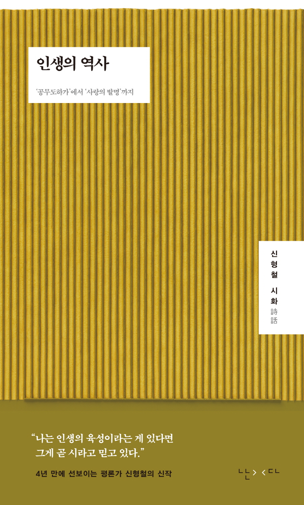

이달의책
이번 달에 새로 나온 책들 중 당신의 취향에 맞는 책을
선별하여 추천해 드립니다.
이달의책
이번 달에 새로 나온 책들 중 당신의 취향에 맞는 책을
선별하여 추천해 드립니다.
“인생의 역사”
‘공무도하가’에서 ‘사랑의 발명’까지
“나는 인생의 육성이라는 게 있다면그게 곧 시라고 믿고 있다.”4년 만에 선보이는 평론가 신형철의 신작. 우리 문학을 향한 ‘정확한 사랑’이자 시대를 읽는 탁월한 문장, 평론가 신형철이 4년 만의 신작으로 돌아왔다.
다섯번째 책이자 처음으로 선보이는 ‘시화(詩話)’임에 그 제목을 『인생의 역사』라 달았다. 저자 스스로 ‘거창한 제목’이라 말하지만, 그 머리에 ‘인생’과 ‘역사’가 나란한 까닭은 간명하다. 시를 이루는 행(行)과 연(聯), 걸어가면서 쌓여가는 일. 우리네 인생이, 삶들의 역사가 그러한 것처럼. 총 5부에 걸쳐 동서고금 스물다섯 편의 시를 꼽아 실었다. 상고시가인 「공무도하가」부터 이영광 시인의 「사랑의 발명」까지, 역사의 너비와 깊이를 한데 아우르는 시들이다. 시 한 편마다 하나의 인생이 담겼음에, 이를 풀어 ‘알자’ 하는 대신 다시 ‘겪자’ 하는 저자의 산문을 나란히 더했다.
여기에 부록으로 묶은 다섯 편의 글은 시의 안팎을 보다 자유로이 오가며 써낸 기록이다. 시를 함께 읽고자 함이나 그 독법을 가르치는 글은 아니다. 직접 겪은 삶을 시로 받아들이는 일, 그리하여 시를 통해 인생을 살아내는 이야기라 하겠다. 저자의 말대로 시를 읽는 일은 “아는 것이 아니라 겪는 것”일 터이므로.
‘시’는 그다지 대단하지 않은 대단한 예술이다. 시는 행(行)과 연(聯)으로 이루어진다. 걸어갈 행, 이어질 연. 글자들이 옆으로 걸어가면서(行) 아래로 쌓여가는(聯) 일이 뭐 그리 대단할 게 있겠는가. 그런데 나는 인생의 육성이라는 게 있다면 그게 곧 시라고 믿고 있다. 걸어가면서 쌓여가는 건 인생이기도 하니까. 그런 의미에서 인생도 행과 연으로 이루어지니까. (7쪽)